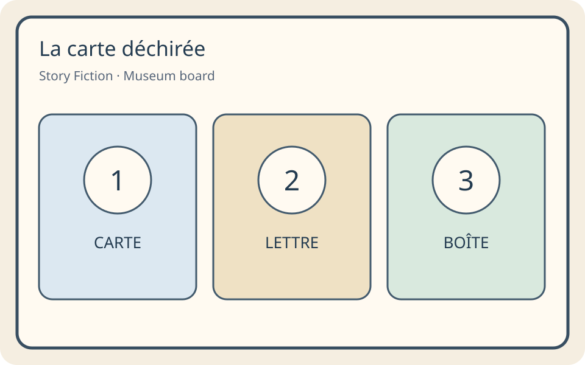
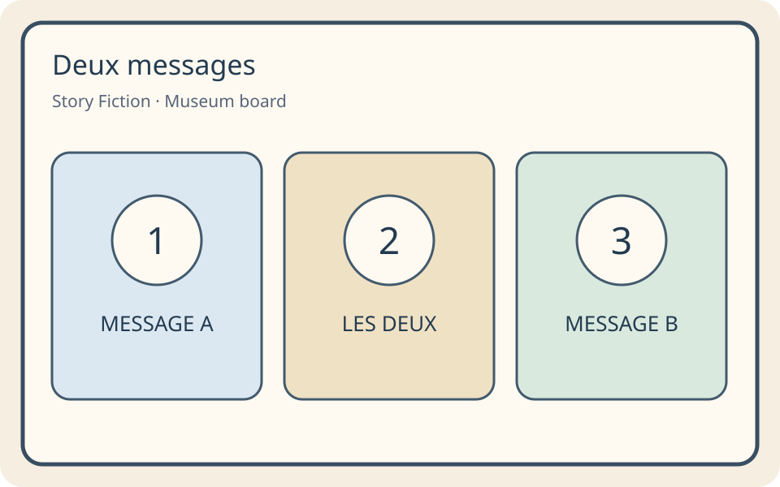
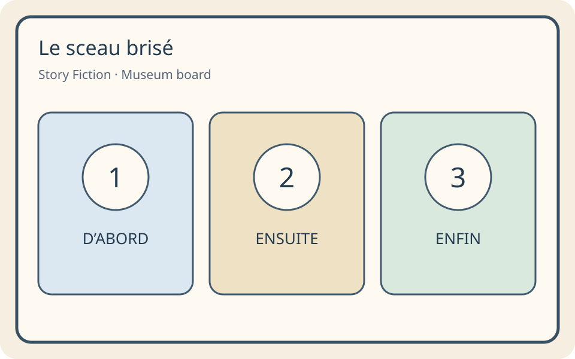
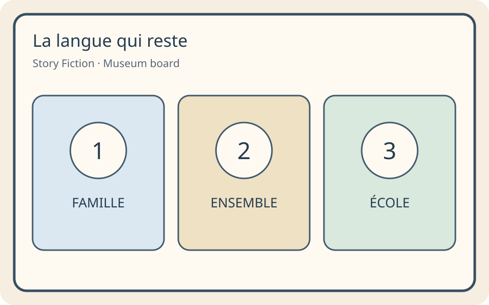

The Missing Pages of the Atlas
Release B v1.1.0 · Content review only. No learner records, speech scoring, recording or network calls.
Four chapters · twelve core sessions · two follow-up review sessions. Each chapter normally introduces six chunks and one central frame.
C1: La carte déchirée · 破损的地图

Language goal: Identify and locate evidence
Frame: La lettre est dans la boîte.
une carte — a map / 一张地图 · une lettre — a letter / 一封信 · une boîte — a box / 一个盒子 · sur — on / 在……上 · sous — under / 在……下 · dans — in / 在……里
Session 1 · Story Fiction / 故事虚构
- Mina : Bienvenue au musée !
Meaning / 意思
Mina: Welcome to the museum!
米娜：欢迎来到博物馆！ - Léo : Il manque quatre pages.
Meaning / 意思
Léo: Four pages are missing.
雷奥：有四页不见了。 - Mina : Regarde la carte.
Meaning / 意思
Mina: Look at the map.
米娜：看这张地图。 - Léo : Une lettre est sous la carte.
Meaning / 意思
Léo: A letter is under the map.
雷奥：一封信在地图下面。 - Mina : Où est la lettre ?
Meaning / 意思
Mina: Where is the letter?
米娜：信在哪里？ - Léo : Cherchons un indice.
Meaning / 意思
Léo: Let’s look for a clue.
雷奥：我们找一个线索吧。
Explicit teaching / 明确教学
Learn the article with the noun: une lettre, une carte, une boîte. Later a specific one becomes la lettre, la carte, la boîte. La lettre est sous la carte means the letter is under the map.
把冠词和名词一起学：une lettre、une carte、une boîte。指特定的物品时，用la lettre、la carte、la boîte。La lettre est sous la carte表示信在地图下面。
Model: Une lettre. La lettre est sous la carte.
Example task and feedback / 任务与反馈示例
Which object should you lift to find the letter?
La lettre est sous la carte.
The letter is under the map. Lifting the map lets you inspect that place.
信在地图下面。抬起地图，才可以查看那个位置。
Session 2 · Story Fiction / 故事虚构
- Léo : Voici une boîte bleue.
Meaning / 意思
Léo: Here is a blue box.
雷奥：这里有一个蓝盒子。 - Mina : La lettre est dans la boîte.
Meaning / 意思
Mina: The letter is in the box.
米娜：信在盒子里。 - Léo : La carte est sur la table.
Meaning / 意思
Léo: The map is on the table.
雷奥：地图在桌子上。 - Mina : Et le crayon ?
Meaning / 意思
Mina: And the pencil?
米娜：铅笔呢？ - Léo : Il est sous la table.
Meaning / 意思
Léo: It is under the table.
雷奥：在桌子下面。 - Mina : Lis la lettre, pas seulement la couleur.
Meaning / 意思
Mina: Read the letter, not just the colour.
米娜：读信，不要只看颜色。
Explicit teaching / 明确教学
Sur is on top; sous is underneath; dans is inside. Keep the whole frame: La lettre est + position + place. Dans la boîte means inside the box, not underneath it.
sur表示在上面，sous表示在下面，dans表示在里面。保留句型：La lettre est +位置+地点。Dans la boîte表示在盒子里面，不是盒子下面。
Model: La lettre est dans la boîte.
Example task and feedback / 任务与反馈示例
Which place should you search first?
La page est dans la boîte bleue.
The clue says dans, not sous. Search inside the blue box.
线索是dans，不是sous；在蓝盒子里面找。
Session 3 · Story Fiction / 故事虚构
- Mina : La lettre dit : « Cherche dans la boîte verte. »
Meaning / 意思
Mina: The letter says: Look in the green box.
米娜：信上说：在绿盒子里找。 - Léo : Pas la boîte bleue ?
Meaning / 意思
Léo: Not the blue box?
雷奥：不是蓝盒子吗？ - Mina : Non. La boîte verte est sous la table.
Meaning / 意思
Mina: No. The green box is under the table.
米娜：不是。绿盒子在桌子下面。 - Léo : Voici la première page !
Meaning / 意思
Léo: Here is the first page!
雷奥：第一张缺页在这里！ - Mina : Elle parle de cartes et de rencontres.
Meaning / 意思
Mina: It is about maps and encounters.
米娜：它讲地图与相遇。 - Léo : Qui a déplacé les pages ?
Meaning / 意思
Léo: Who moved the pages?
雷奥：谁移动了这些页？
Explicit teaching / 明确教学
Use the relation, not just the object or colour. La boîte est sous la table tells you where the box is. Then look inside it only if the clue says dans la boîte.
根据位置关系，不要只看物品或颜色。La boîte est sous la table说明盒子在哪里。只有线索说dans la boîte时，才在盒子里面找。
Model: La boîte est sous la table.
Example task and feedback / 任务与反馈示例
Choose the complete search location.
La page est dans la boîte verte. La boîte verte est sous la table.
Use both relations. First locate the green box under the table; then inspect inside it.
用两个位置关系：先找到桌下的绿盒子，然后查看里面。
Real History / 真实历史 · A map is not an empty land
Des peuples autochtones vivent ici depuis très longtemps. Une carte française ne prouve pas que la terre était vide.
Indigenous peoples lived in these lands long before French colonists arrived. French maps expressed European knowledge and claims; a map did not make the land empty or erase Indigenous rights. French expansion involved trade, settlement and relationships with other peoples.
法国殖民者到来以前，原住民族已在这些土地上生活很久。法国地图表达欧洲人的认识和主张；画上地图不代表土地无人居住，也不能抹去原住民族的权利。法国的扩张涉及贸易、定居和与其他民族的关系。
Does drawing a place on a map mean nobody lived there?
把一个地方画在地图上，是否代表那里原来没有人居住？
Discuss / 讨论
No. Maps can leave people and perspectives out.
不代表。地图可能遗漏一些人及其观点。H-ALLIANCE
C2: Deux messages · 两条信息

Language goal: Compare accounts and justify one conclusion
Frame: Je pense que les deux messages parlent de la boîte.
un message — a message / 一条信息 · un indice — a clue / 一个线索 · les deux — both / 两者都 · mais — but / 但是 · parce que — because / 因为 · je pense que — I think that / 我认为
Session 1 · Story Fiction / 故事虚构
- Mina : Voici deux messages.
Meaning / 意思
Mina: Here are two messages.
米娜：这里有两条信息。 - Léo : Le premier parle de la boîte.
Meaning / 意思
Léo: The first talks about the box.
雷奥：第一条讲盒子。 - Mina : Le deuxième parle aussi de la boîte.
Meaning / 意思
Mina: The second also talks about the box.
米娜：第二条也讲盒子。 - Léo : Les deux disent la même chose ?
Meaning / 意思
Léo: Do both say the same thing?
雷奥：两条说的是同一件事吗？ - Mina : Pas tout à fait.
Meaning / 意思
Mina: Not quite.
米娜：不完全是。 - Léo : Lisons les deux.
Meaning / 意思
Léo: Let’s read both.
雷奥：我们把两条都读一读。
Explicit teaching / 明确教学
Les deux means both. Look for a detail that is true in each message. Both can mention a box while giving different facts about it.
les deux表示两者都。找在每条信息里都成立的细节。两条都可以提到盒子，但给出有关它的不同事实。
Model: Les deux messages parlent de la boîte.
Example task and feedback / 任务与反馈示例
Use both messages to choose one place to search.
A : La lettre est dans la salle rouge. B : La lettre est sous la carte.
One message gives the room; the other gives the position. Combine them.
一条给房间，另一条给位置。把它们结合起来。
Session 2 · Story Fiction / 故事虚构
- Mina : Message A : « La boîte est dans la salle rouge. »
Meaning / 意思
Mina: Message A: The box is in the red room.
米娜：信息A：盒子在红色房间里。 - Léo : Message B : « La boîte est sous la table. »
Meaning / 意思
Léo: Message B: The box is under the table.
雷奥：信息B：盒子在桌子下面。 - Mina : Les deux parlent de la boîte.
Meaning / 意思
Mina: Both talk about the box.
米娜：两条都讲盒子。 - Léo : Mais ils donnent des indices différents.
Meaning / 意思
Léo: But they give different clues.
雷奥：但是它们给出不同的线索。 - Mina : Je pense qu’il faut chercher dans la salle rouge.
Meaning / 意思
Mina: I think we need to look in the red room.
米娜：我认为需要在红色房间里找。 - Léo : Ensuite, sous la table !
Meaning / 意思
Léo: Then under the table!
雷奥：然后在桌子下面！
Explicit teaching / 明确教学
Mais signals a difference or contrast. It does not mean both messages are false. Combine the two useful details: a room and a position.
mais表示差别或转折，不代表两条信息都是假的。把两个有用细节结合：房间和位置。
Model: La boîte est dans la salle rouge, mais la lettre est dans la salle bleue.
Example task and feedback / 任务与反馈示例
Does message B contradict A?
A : La boîte est bleue. B : La boîte est sous la table.
Colour and position can both be true. Different does not always mean contradictory.
颜色和位置可以同时成立。不同不一定是矛盾。
Session 3 · Story Fiction / 故事虚构
- Léo : La deuxième page est ici.
Meaning / 意思
Léo: The second page is here.
雷奥：第二页在这里。 - Mina : Deux messages nous ont aidés.
Meaning / 意思
Mina: Two messages helped us.
米娜：两条信息帮助了我们。 - Léo : Une seule voix suffit toujours ?
Meaning / 意思
Léo: Is one voice always enough?
雷奥：一种声音总是足够的吗？ - Mina : Non. Une voix peut oublier un détail.
Meaning / 意思
Mina: No. One voice can leave out a detail.
米娜：不是。一种声音可能漏掉一个细节。 - Léo : Je pense qu’il faut comparer les indices.
Meaning / 意思
Léo: I think we need to compare the clues.
雷奥：我认为需要比较线索。 - Mina : La page suivante porte un sceau.
Meaning / 意思
Mina: The next page carries a seal.
米娜：下一页上有一个封印。
Explicit teaching / 明确教学
Je pense que introduces a conclusion; parce que introduces the reason. The reason should point to a clue, not merely say I like it.
je pense que引出结论，parce que引出理由。理由应指向线索，不能只说我喜欢它。
Model: Je pense que la page est dans la boîte parce que le message parle de la boîte.
Example task and feedback / 任务与反馈示例
Which conclusion is supported by both messages?
A : La page est dans la boîte. B : La boîte est dans la salle rouge.
Keep both useful details. You have enough evidence to inspect the red room’s box.
保留两个有用细节。有足够证据检查红色房间的盒子。
Real History / 真实历史 · Alliances involved choices
Les Mi’kmaq et les Français ont une alliance au XVIIIe siècle. Les deux partenaires ont leurs propres objectifs.
In the eighteenth century, Mi’kmaq and French leaders maintained an alliance involving trade and war. The partners had their own goals and renewed their relationships through diplomacy. Indigenous peoples were decision-makers, not simply helpers in a French story. One alliance does not represent every Indigenous nation.
十八世纪，米克马克人与法国人维持涉及贸易和战争的联盟。双方各有目标，并通过外交维持关系。原住民族是作出决定的主体，不只是法国故事里的帮手。一个联盟不能代表所有原住民族。
Can two partners cooperate while having different goals?
两个伙伴可以在目标不同的情况下合作吗？
Discuss / 讨论
Yes. Compare what each partner wants; do not assume one speaks for the other.
可以。比较双方各自的目标，不要认为一方能代表另一方。H-ALLIANCE
C3: Le sceau brisé · 破损的封印

Language goal: Sequence a short account and state one past event
Frame: D’abord, Mina a trouvé une lettre.
d’abord — first / 首先 · ensuite — next / 接着 · enfin — finally / 最后 · avant — before / 在……之前 · après — after / 在……之后 · a trouvé — found / 找到了
Session 1 · Story Fiction / 故事虚构
- Léo : Le sceau est brisé.
Meaning / 意思
Léo: The seal is broken.
雷奥：封印破了。 - Mina : Voici trois images.
Meaning / 意思
Mina: Here are three pictures.
米娜：这里有三张图。 - Léo : Une lettre, une clé, une boîte.
Meaning / 意思
Léo: A letter, a key, a box.
雷奥：一封信、一把钥匙、一个盒子。 - Mina : D’abord, j’ai trouvé la lettre.
Meaning / 意思
Mina: First, I found the letter.
米娜：首先，我找到了信。 - Léo : Ensuite, tu as trouvé la clé.
Meaning / 意思
Léo: Next, you found the key.
雷奥：接着，你找到了钥匙。 - Mina : Enfin, j’ai ouvert la boîte.
Meaning / 意思
Mina: Finally, I opened the box.
米娜：最后，我打开了盒子。
Explicit teaching / 明确教学
D’abord, ensuite, enfin tell the order. First, next, finally are about sequence, not how important an event is. Use the pictures while learning; use a new account for the check.
d’abord、ensuite、enfin说明顺序：首先、接着、最后。顺序并不代表事件的重要程度。学习时用图片，检查时用新的描述。
Model: D’abord, la lettre. Ensuite, la clé. Enfin, la boîte.
Example task and feedback / 任务与反馈示例
Put the object cards in the order of the account.
D’abord, la lettre. Ensuite, la clé. Enfin, la boîte.
Follow the three order words, not the order in which pictures are drawn.
按三个顺序词，不按图片显示的顺序。
Session 2 · Story Fiction / 故事虚构
- Léo : La boîte était ouverte avant la lettre ?
Meaning / 意思
Léo: Was the box opened before the letter?
雷奥：盒子在信之前就被打开了吗？ - Mina : Non. Regarde l’ordre.
Meaning / 意思
Mina: No. Look at the order.
米娜：不是。看顺序。 - Léo : D’abord, la lettre.
Meaning / 意思
Léo: First, the letter.
雷奥：首先是信。 - Mina : Ensuite, la clé.
Meaning / 意思
Mina: Next, the key.
米娜：接着是钥匙。 - Léo : Enfin, la boîte.
Meaning / 意思
Léo: Finally, the box.
雷奥：最后是盒子。 - Mina : La troisième page est sous le couvercle.
Meaning / 意思
Mina: The third page is under the lid.
米娜：第三页在盖子下面。
Explicit teaching / 明确教学
Avant means before; après means after. If the key comes after the letter, the letter comes before the key. Turning that around reverses the clue.
avant表示之前，après表示之后。如果钥匙在信之后，那么信在钥匙之前。把关系反过来就会改变线索。
Model: La lettre est avant la clé. La boîte est après la clé.
Example task and feedback / 任务与反馈示例
Choose which event must come first.
Mina a trouvé la lettre avant la clé.
Avant means before. The letter precedes the key.
avant是之前，信在钥匙之前。
Session 3 · Story Fiction / 故事虚构
- Mina : Qui a trouvé la clé ?
Meaning / 意思
Mina: Who found the key?
米娜：谁找到了钥匙？ - Léo : Mina a trouvé la clé.
Meaning / 意思
Léo: Mina found the key.
雷奥：米娜找到了钥匙。 - Mina : Et la page ?
Meaning / 意思
Mina: And the page?
米娜：那缺页呢？ - Léo : Léo a trouvé la page.
Meaning / 意思
Léo: Léo found the page.
雷奥：雷奥找到了缺页。 - Mina : La page parle d’un changement de contrôle.
Meaning / 意思
Mina: The page is about a change in control.
米娜：这一页讲控制权的变化。 - Léo : Un changement efface-t-il toutes les voix ?
Meaning / 意思
Léo: Does a change erase all the voices?
雷奥：变化会抹去所有声音吗？
Explicit teaching / 明确教学
Learn this small past-event chunk: Mina a trouvé la clé. A trouvé says that the finding already happened. Keep a with trouvé. This lesson does not teach every form of the past tense.
学习这个小的过去事件语块：Mina a trouvé la clé。a trouvé表示寻找已发生。保留a和trouvé。本课不要求掌握过去时的所有形式。
Model: Mina a trouvé la clé. Léo a trouvé la page.
Example task and feedback / 任务与反馈示例
Which account matches the recovered page?
D’abord, Mina a trouvé la clé. Ensuite, Léo a trouvé la boîte. Enfin, Mina a trouvé la page.
Keep the sequence even though two people take part.
即使有两个人参与，也保留事件顺序。
Real History / 真实历史 · Control changed; people remained
En 1763, le traité de Paris change le contrôle colonial du Canada. Les peuples et les langues ne disparaissent pas.
At the end of the Seven Years’ War, the 1763 Treaty of Paris transferred France’s colonial control of Canada to Great Britain. This did not erase the people living there or their languages. It did not mean France lost every overseas territory at once, or that Indigenous peoples agreed to European claims.
七年战争结束时，1763年的《巴黎条约》把法国对加拿大的殖民控制权转交给英国。这并没有使当地居民或他们的语言消失，也不代表法国同时失去所有海外领地，或原住民族同意欧洲的领土主张。
Did a treaty make all the people and languages disappear?
签订条约会让所有居民和语言消失吗？
Discuss / 讨论
No. Political control and people’s lives are different things.
不会。政治控制权与人们的生活是不同的事情。H-WAR
Real History / 真实历史 · An empire also caused harm
L’esclavage existe en Nouvelle-France. Des personnes sont privées de liberté et forcées à travailler.
Enslavement existed in New France. Enslaved people were denied freedom and forced to work. This was harm, not a fair exchange. Learning about trade and exploration must also include people who were harmed and people who resisted.
新法兰西也存在奴役制度。被奴役者被剥夺自由、被迫劳动。这是伤害，不是公平交换。学习贸易与探索时，也必须了解受害者与反抗者。
Why is a story of trade and victories alone incomplete?
为什么只讲贸易和胜利是不完整的？
Discuss / 讨论
It leaves out harm, the people affected, and resistance.
它遗漏了伤害、受到影响的人及反抗。H-SLAVERY
C4: La langue qui reste · 留下来的语言

Language goal: Connect present-day voices with a simple reason
Frame: On parle français à l’école.
aujourd’hui — today / 今天 · encore — still / again, depending on context / 仍然／又，取决于语境 · une langue — a language / 一种语言 · une école — a school / 一所学校 · une famille — a family / 一个家庭 · ensemble — together / 一起
Session 1 · Story Fiction / 故事虚构
- Léo : Voici une photo d’une école.
Meaning / 意思
Léo: Here is a photo of a school.
雷奥：这里有一张学校照片。 - Mina : On parle français à l’école.
Meaning / 意思
Mina: People speak French at school.
米娜：人们在学校说法语。 - Léo : Et à la maison ?
Meaning / 意思
Léo: And at home?
雷奥：家里呢？ - Mina : Certaines familles parlent français à la maison.
Meaning / 意思
Mina: Some families speak French at home.
米娜：一些家庭在家里说法语。 - Léo : Une personne peut parler deux langues ?
Meaning / 意思
Léo: Can a person speak two languages?
雷奥：一个人能说两种语言吗？ - Mina : Oui, et parfois plus !
Meaning / 意思
Mina: Yes, and sometimes more!
米娜：能，有时还会更多！
Explicit teaching / 明确教学
On parle français means people/we speak French in this context. On takes parle, not parlent. À l’école means at school; l’école keeps the apostrophe because école starts with a vowel.
在这里，on parle français表示人们／我们说法语。on后面用parle，不是parlent。à l’école表示在学校；école以元音开头，所以保留l’école的撇号。
Model: On parle français à l’école.
Example task and feedback / 任务与反馈示例
Which label belongs with the school message?
À l’école, nous apprenons le français ensemble.
The message describes this school. It does not describe every family.
信息描述这所学校，不代表所有家庭。
Session 2 · Story Fiction / 故事虚构
- Mina : Voici une carte de l’Alberta.
Meaning / 意思
Mina: Here is a map of Alberta.
米娜：这里有一张阿尔伯塔地图。 - Léo : On parle français ici aussi ?
Meaning / 意思
Léo: Is French spoken here too?
雷奥：这里也说法语吗？ - Mina : Oui. Écoute ce message du musée.
Meaning / 意思
Mina: Yes. Listen to this museum message.
米娜：是的。听这条博物馆信息。 - Léo : « Aujourd’hui, nous apprenons ensemble. »
Meaning / 意思
Léo: Today, we learn together.
雷奥：今天，我们一起学习。 - Mina : Le français appartient à plusieurs communautés.
Meaning / 意思
Mina: French belongs to several communities.
米娜：法语属于多个社群。 - Léo : La dernière page est près des messages.
Meaning / 意思
Léo: The last page is near the messages.
雷奥：最后一页在信息旁边。
Explicit teaching / 明确教学
Encore can mean still or again. In On parle encore français ici, it means still. Aujourd’hui marks today; it does not mean that every person in a place speaks French.
encore可表示仍然或又。在On parle encore français ici中，它表示仍然。aujourd’hui表示今天，不代表一个地方的每个人都说法语。
Model: Aujourd’hui, on parle encore français ici.
Example task and feedback / 任务与反馈示例
Which conclusion fits BOTH fictional messages?
A : À la maison, je parle français et anglais. B : À l’école, j’apprends le français.
Home and school are two settings. The first message also names two languages.
家和学校是两个场景。第一条还提到两种语言。
Session 3 · Story Fiction / 故事虚构
- Mina : Tu as retrouvé les quatre pages !
Meaning / 意思
Mina: You found all four pages!
米娜：你找回了四页！ - Léo : Mais qui les avait déplacées ?
Meaning / 意思
Léo: But who had moved them?
雷奥：但是谁移动了它们？ - Mina : Moi, pour préparer une nouvelle exposition.
Meaning / 意思
Mina: I did, to prepare a new exhibit.
米娜：是我，为了准备一个新展览。 - Léo : Pas un voleur ?
Meaning / 意思
Léo: Not a thief?
雷奥：不是小偷？ - Mina : Non. Je voulais réunir les cartes et les voix.
Meaning / 意思
Mina: No. I wanted to bring the maps and voices together.
米娜：不是。我想把地图与声音放在一起。 - Léo : Notre atlas doit montrer les deux.
Meaning / 意思
Léo: Our atlas needs to show both.
雷奥：我们的地图册需要展现两者。 - Mina : Écrivons une légende pour les visiteurs.
Meaning / 意思
Mina: Let’s write a caption for visitors.
米娜：我们给参观者写一条说明。 - Léo : Et gardons une place pour d’autres voix.
Meaning / 意思
Léo: And leave room for other voices.
雷奥：还要为其他声音留出位置。
Explicit teaching / 明确教学
Add a reason using the earlier chunk parce que. Say what the actual message supports: On parle français à l’école parce qu’on apprend ensemble. A school is one context, not proof about every family.
用之前学过的parce que加理由。说出信息真正支持的内容：On parle français à l’école parce qu’on apprend ensemble。学校只是一个场景，不代表所有家庭。
Model: On parle français à l’école parce qu’on apprend ensemble.
Example task and feedback / 任务与反馈示例
Which exhibit title fits the restored atlas?
Des cartes montrent des changements. Des messages montrent des voix d’aujourd’hui.
Both the maps and today’s messages matter. This concludes the fictional museum mystery.
地图和今天的信息都重要。这结束了虚构的博物馆谜题。
Real History / 真实历史 · People resisted colonial rule
Haïti proclame son indépendance en 1804. Des personnes réduites en esclavage ont lutté pour leur liberté.
In the Caribbean, people in the French colony of Saint-Domingue fought against enslavement and colonial rule. Haiti proclaimed independence in 1804. This is a different place and event from Canada in 1763. The people who fought for freedom belong at the centre of that story.
在加勒比海的法国殖民地圣多明各，人们反抗奴役和殖民统治。海地于1804年宣布独立。这与1763年加拿大的事件发生在不同地点。争取自由的人应处于故事中心。
Is Haiti’s independence the same event as the 1763 treaty affecting Canada?
海地独立与影响加拿大的1763年条约是同一事件吗？
Discuss / 讨论
No. Different places, dates and struggles need separate explanations.
不是。不同地点、日期与斗争需要分别解释。H-HAITI
Real History / 真实历史 · A language is more than an empire
Aujourd’hui, on parle français dans plusieurs régions du monde, y compris en Alberta. On peut parler plusieurs langues.
French is used by communities in many parts of the world, including Alberta. Colonial history is one part of that story; families, education, migration and community choices also matter. French is not the only language in those places. Speaking French does not mean supporting an empire or having only one identity.
今天，世界许多地方的社群使用法语，包括阿尔伯塔。殖民历史是其中一部分；家庭、教育、迁移与社群的选择也很重要。这些地方不只有法语。说法语不代表支持帝国，也不代表只有一种身份。
Can a person speak French and another language?
一个人可以同时说法语和另一种语言吗？
Discuss / 讨论
Yes. Communities and people can have several languages and identities.
可以。社群与个人可以拥有多种语言和身份。H-ALBERTA · H-WORLD
Revised support and production / 更新后的帮助与表达
Hear and recognize → assemble word tiles → complete a frame → respond to a different French clue. Both profiles share the story; listening support can differ while grammar and production start with models.
听并识别 → 拼词块 → 补全句型 → 根据另一条法语线索回答。两人共享故事；听力帮助可以不同，语法与表达都从例句开始。
Open writing and speaking are unjudged, optional observations. A complete message with a missing taught accent gets separate meaning and spelling feedback.
C1 · Encoding / 拼写输入
boîte · Hold i, slide to î, then release. Boîte is the same box word with its taught spelling. The accent is part of this word; not every letter i needs one.
长按i，滑到î，再松开。boîte是本课“盒子”的拼写。这个词需要这个符号；并非每个i都加。
C2 · Encoding / 拼写输入
l’indice · Before the vowel in indice, le becomes l’. The apostrophe joins the article and noun. Use the keyboard apostrophe; straight and curly shapes both count.
indice以元音开头，前面的le变成l’。撇号连接冠词与名词。使用键盘上的撇号；直形与弯形都可以。
C3 · Encoding / 拼写输入
trouvé · Hold e, slide to é, then release. In trouvé, keep é at the end. Listen to a trouvé as one short group; this keyboard check is spelling, not a pronunciation grade.
长按e，滑到é，再松开。trouvé的末尾保留é。把a trouvé作为一个短语听；键盘检查是拼写，不是发音评分。
C4 · Encoding / 拼写输入
à · À introduces a place in à l’école. A without the accent is a different form, as in Mina a trouvé. Hold a and choose à. Do not treat a and à as always interchangeable.
à l’école里的à引出地点。不带符号的a是另一个形式，例如Mina a trouvé。长按a，选择à。不能把a与à一律当成可互换。
C1 · First guided sentence / 第一个有指导的句子
La lettre est sous la carte.
Assembly tiles: carte | la | sous | est | lettre | La
Independent French clue: Carte : sur la table.
Full fixed activity pool and supported variants are in the JSON files.
C2 · First guided sentence / 第一个有指导的句子
Les deux messages parlent de la boîte.
Assembly tiles: boîte | la | de | parlent | messages | deux | Les
Independent French clue: A : La carte est rouge. B : La carte est sur la table. Les deux : …
Full fixed activity pool and supported variants are in the JSON files.
C3 · First guided sentence / 第一个有指导的句子
Mina a trouvé la lettre.
Assembly tiles: lettre | la | trouvé | a | Mina
Independent French clue: Mina → carte. Déjà trouvé.
Full fixed activity pool and supported variants are in the JSON files.
C4 · First guided sentence / 第一个有指导的句子
On parle français à l’école.
Assembly tiles: l’école | à | français | parle | On
Independent French clue: Maison : français. Commence par On.
Full fixed activity pool and supported variants are in the JSON files.
Pilot resolution / 试用故事结局
Mina moved the pages for a new exhibit. Maps alone were not enough: people, perspectives and living languages belong in the atlas too.
米娜为了新展览移动了缺页。仅有地图还不够：地图册也应包含人、不同观点和今天使用的语言。
The complete fixed item pool, answer variants, feedback, scheduling and test fixtures are in the JSON files. This reader is not a replacement for the governed learning engine.